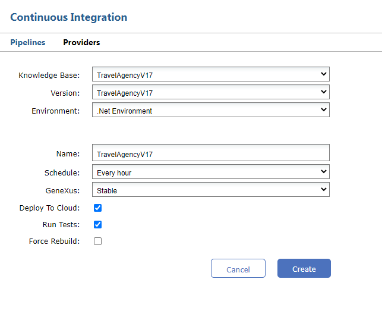
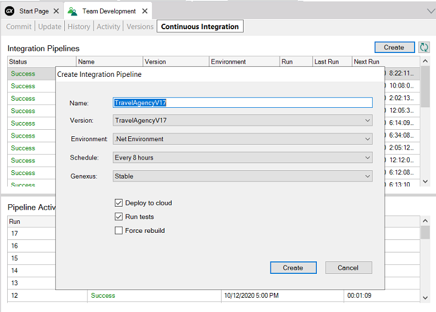
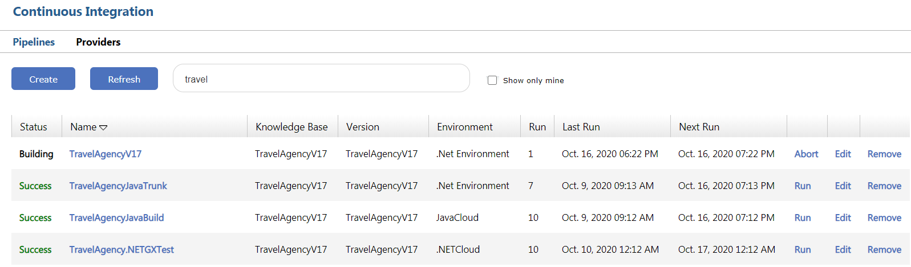
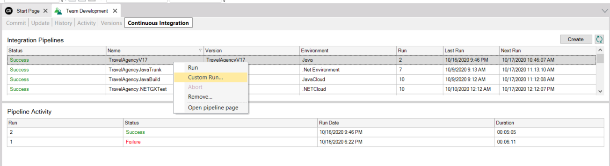

To create a new pipeline from the GeneXus Server console, select the Create button in the Continuous Integration menu.

It is also possible to create a pipeline from the GeneXus IDE by clicking on the Create button in the Pipelines tab.

The following information must be completed:
- Knowledge Base: GX KB in which the pipeline will be created
- Version: Version of the KB in which the pipeline will be created
- Environment: Environment of the KB where the pipeline is going to be created (these are the environments associated with the GXserver KB)
- Name: Pipeline name
- Schedule: How often the KB will be checked to see if there were changes and whether to run the pipeline or not
- GeneXus: Version of GeneXus from those cataloged in Jenkins that will be used to perform the actions defined in the pipeline
- Deploy To Cloud: If a Deploy to Cloud will be performed (this is to configure the KB property Deploy to Cloud = Yes / No)
- Run Tests: If the tests that are stored in the KB are going to be executed after having made the KB build. If tests are defined in the KB, the Unit tests will be executed first and then the UI tests (these only when Deploy to cloud = Yes)
- Force Rebuild: Indicates if a KB Build or Rebuild will be performed.
Once the pipeline is created, it remains in the list of available pipelines.

From here it is possible to run the pipeline manually (Run), Edit the pipeline, and Delete it.
By accessing the Continuous Integration tab from the GeneXus IDE it is also possible to execute the pipeline.

|